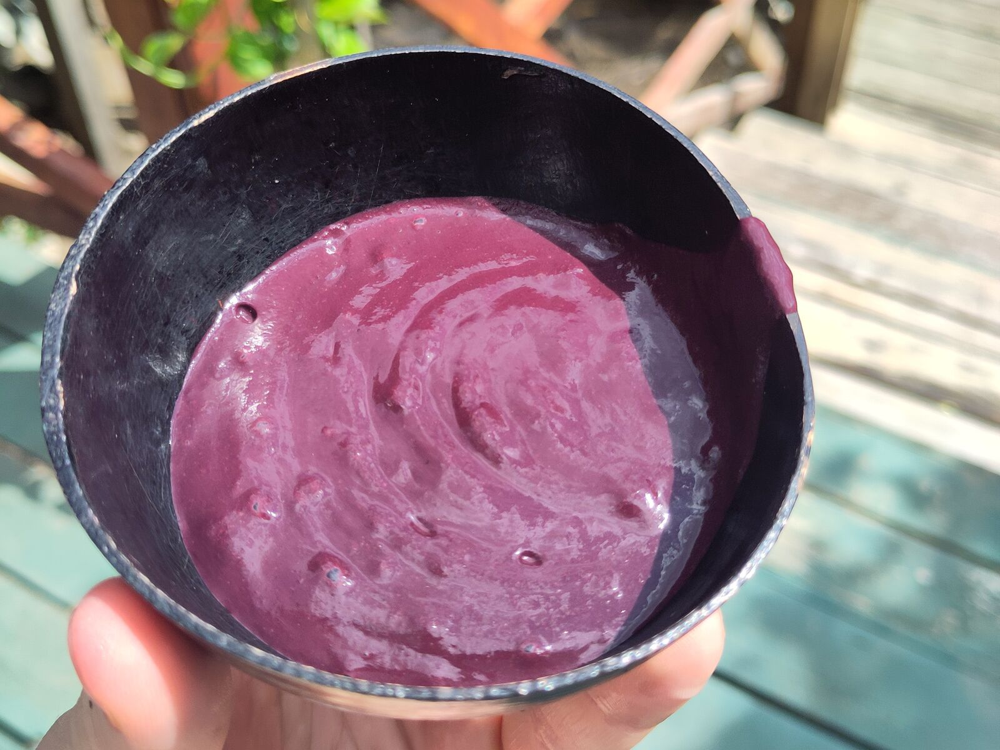

Açaí de terra firme
Açaí que produz também na entressafra
Na terra firme, o açaizeiro em produção não aguenta mais de duas semanas sem água: derruba os frutos. Com irrigação, a colheita avança pela entressafra, quando o preço chega ao triplo da safra (Embrapa).

As fichas técnicas no seu e-mail
Irrigação solar e câmara fria solar: componentes, sistemas de referência e garantias em PDF, em português.
- Componentes
- Sistemas de referência
- Garantias
- Entrega
Ou mande uma mensagem direto por e-mail, info@agrotechdaholanda.com.br, ou pelo Instagram, @agrotech_da_holanda.
Por que água
Na terra firme, a seca derruba a colheita
Em clima com 3 a 5 meses de estiagem, a Embrapa indica irrigação suplementar para o açaí de terra firme. A safra vai de julho a dezembro e a entressafra de janeiro a junho, com variação conforme o local (Embrapa, 2014).
- 3 a 5 meses de estiagemÉ quando a Embrapa indica irrigar a terra firme. No nordeste paraense, a estiagem vai de agosto a novembro.
- Irrigar antes de faltarMuitos produtores só começam quando a água já falta. Para a Embrapa, é uma das principais razões do baixo rendimento dos açaizais do Pará.
- 12,9 t/haé o que a BRS Pai d'Égua alcança com irrigação e adubação, no oitavo ano (Embrapa, 2019).
Em números
Irrigar açaí, em quatro números
- 2 semanassem água e o açaizeiro em produção derruba frutos
- Até 46%dos frutos na entressafra, com irrigação (Embrapa)
- 120 litrospor touceira, por dia, no período seco (Embrapa)
- Até 3×o preço da safra, na entressafra (Embrapa)
Irrigação solar inteligente
Microaspersão movida a sol
A microaspersão é o método mais usado no açaí de terra firme. O sistema solar bombeia a água do poço, do rio ou da represa e liga quando o solo pede.
- Onde a rede não chegaEm 2017, um terço dos estabelecimentos do nordeste paraense não tinha energia elétrica (IBGE). A bomba solar não depende da rede.
- Pelo solo, não pelo calendárioNos sistemas completos, sensores medem a umidade, e a irrigação começa antes de faltar água.
- De 1 a 10 hanos sistemas de referência; áreas maiores, caso a caso.
Câmara fria solar
Mais algumas horas até a batedeira
O fruto do açaí deve ser despolpado em até 24 horas. Em torno de 10 °C, esse prazo se estende (Embrapa). A câmara fria solar guarda o fruto colhido até a batedeira ou o transporte.
- Em torno de 10 °CDentro da faixa da câmara, que trabalha de −5 °C a +18 °C.
- Na própria fazendaContêiner de 6 ou 12 metros (20 ou 40 pés), com o sol em primeiro lugar.
Açaí em área já aberta, não em floresta
A Embrapa recomenda plantar açaí de terra firme em áreas já usadas, evitando áreas virgens. Na várzea, o manejo intenso do açaí reduz a diversidade de árvores (Freitas e outros, 2021, com o Museu Goeldi). Por isso o nosso foco é a terra firme.
Também planta cacau?
No período seco, a irrigação ajuda o cacaueiro a florescer.
Proposta detalhada
Conte onde fica o seu açaizal.
Com a localização e um mapa da área, calculamos a água, a bomba e os painéis. Respondemos com uma proposta detalhada, sem compromisso. O primeiro piloto sai a preço de custo.
Ou mande uma mensagem direto por e-mail, info@agrotechdaholanda.com.br, ou pelo Instagram, @agrotech_da_holanda.
Perguntas frequentes
Açaí de terra firme precisa de irrigação?
Onde há de 3 a 5 meses de estiagem, sim: a Embrapa indica irrigação suplementar para o açaí de terra firme. No nordeste paraense, a estiagem vai de agosto a novembro, e o açaizeiro em produção não tolera mais de duas semanas sem água: derruba os frutos. Com irrigação, a BRS Pai d'Égua dá de 44 a 46% dos frutos na entressafra. Na várzea, o rio irriga.
Quanta água um açaizal de terra firme precisa?
A Embrapa indica, por touceira e por dia no período seco, 40 litros no primeiro ano, 60 litros do segundo ao terceiro e 120 litros a partir do terceiro ano, com 400 touceiras por hectare. A microaspersão é o método mais usado. O sistema certo para a sua área vem na proposta, calculado com a fonte de água e o terreno.
Fontes
- IBGE, Produção Agrícola Municipal 2025 (produção e área de açaí cultivado).
- IBGE, Censo Agropecuário 2017 (energia elétrica nos estabelecimentos).
- Embrapa, Agência de Informação Tecnológica, Açaí: necessidades de irrigação e cuidados antes do processamento.
- Embrapa, Comunicado Técnico 317, Farias Neto, 2019 (BRS Pai d'Égua).
- Embrapa, Cultivo do açaizeiro em terra firme, 2025, cap. 10, Irrigação.
- Embrapa Amapá, Plantio de açaizeiro em terra firme, 2011.
- Embrapa Amazônia Oriental, Oliveira, Farias Neto e Queiroz, Cultivo e manejo do açaizeiro para produção de frutos, 2014 (safra e entressafra).
- Freitas e outros, Biological Conservation 261, 2021.
Reels
Siga-nos no Instagram
Em vídeos curtos, mostramos como a irrigação solar e a câmara fria funcionam.
@agrotech_da_holanda (abre o Instagram)